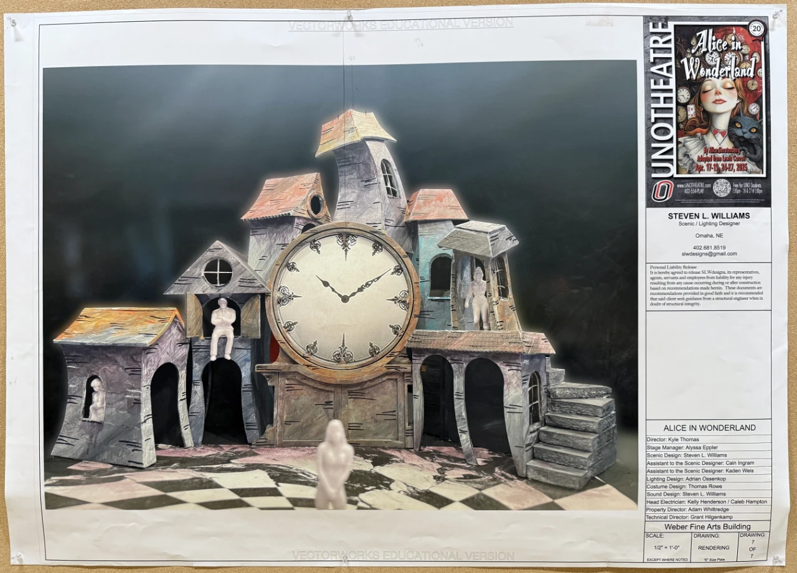
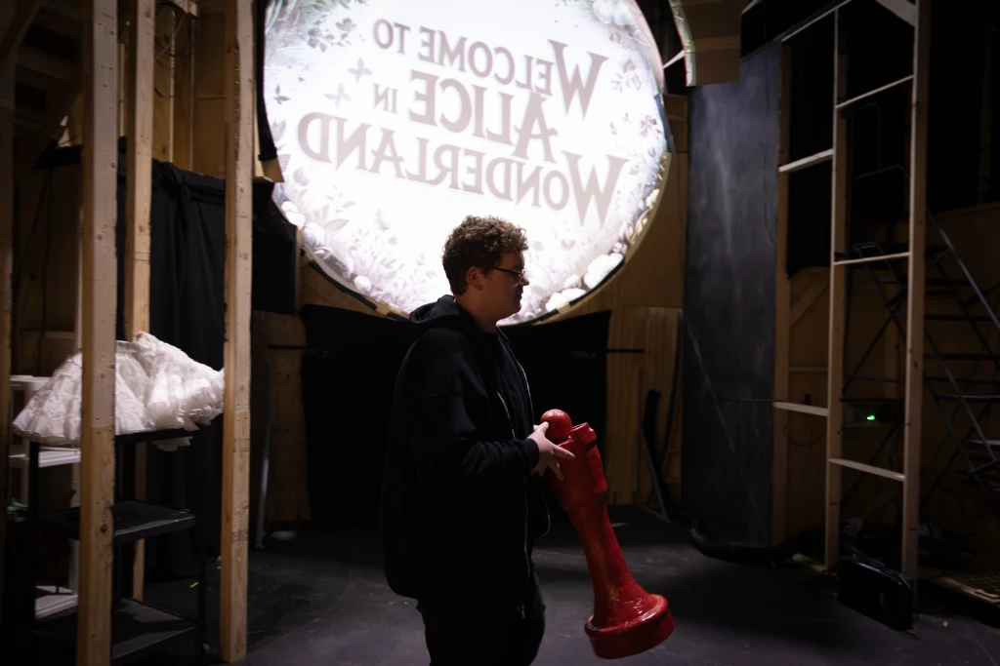
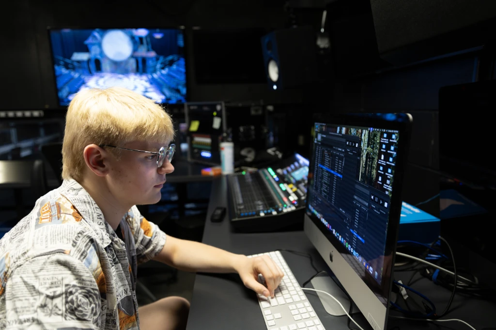
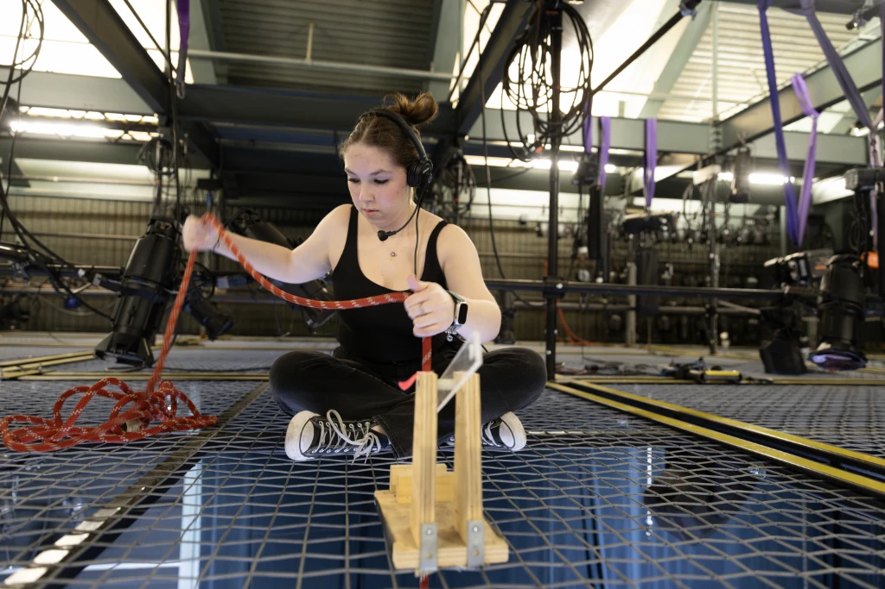
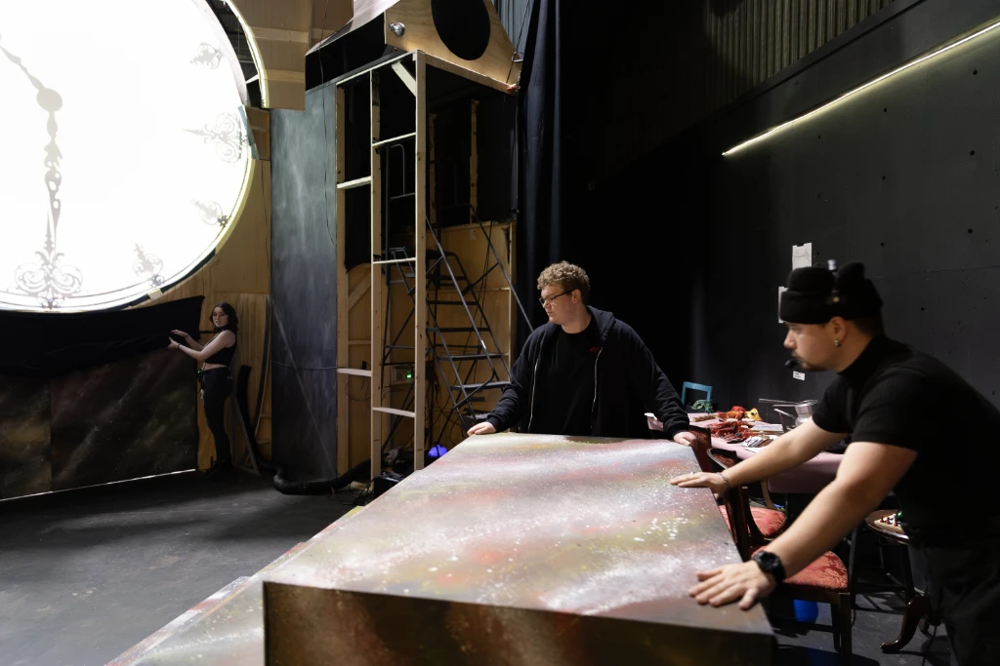
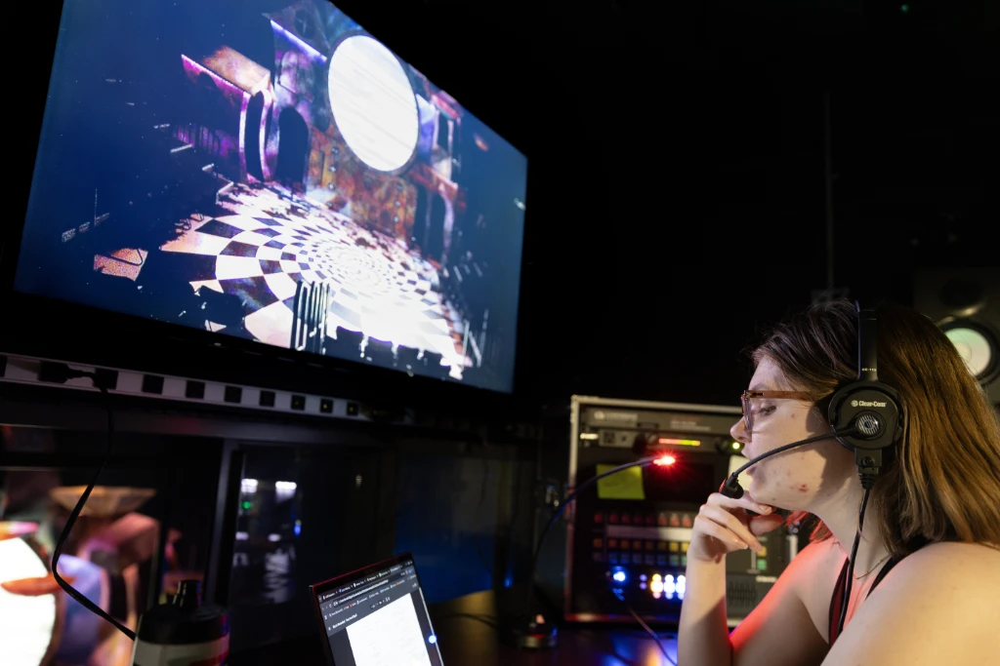

Alice in Wonderland
Fall down the rabbit hole into a darker take than Disney. AI-assisted illustrations in a hatched, desaturated style.
Venue: University of Nebraska at Omaha - UNO Theater
Run Dates: April 17-27, 2025
Director: Kyle Thomas
Projection Design: Charles Wilke
Featured: One large 12-foot circular screen, sitting atop the center of the stage.
Production Stills
"Curiouser and curiouser!"
Commercial Spot
UNO Theater's production pushes boundaries with its unique vision, creating an experience that the Gateway describes as "something out of a fever dream." The desaturated, hatched art style and surreal projections prove that "there is a method to their madness," transforming the stage into a wonderland that defies expectations.
"Sometimes I believe in as many as six impossible things before breakfast" — Alice
Stage Rendering
A circular projection screen, 12 feet in diameter, hovers above the stage like a portal into Wonderland. This centerpiece of our design creates a focal point for the audience while allowing the cast to interact with both the physical set and the projected environments. The screen's positioning and size were carefully calculated to maintain visibility from all audience angles while integrating seamlessly with the stage design.
"It's no use going back to yesterday, because I was a different person then" — Alice

Running the Show
Photos by Ryan Soderlin





@unotheatre on Instagram
UNO Theatre's cast and crew shared their journey to Wonderland on Instagram. Here are a few of our favorite moments from behind the scenes and on stage.